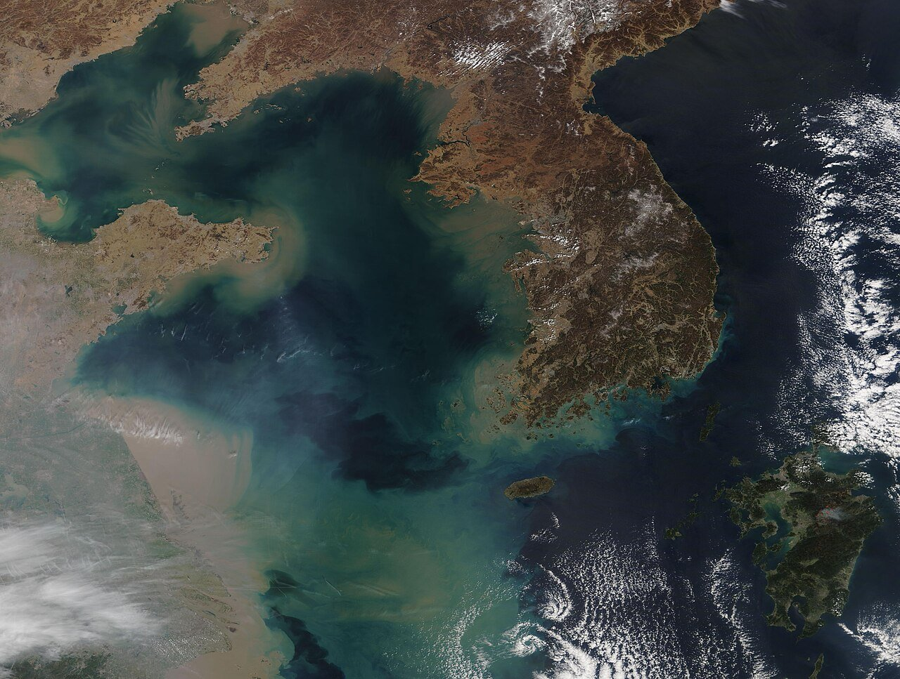
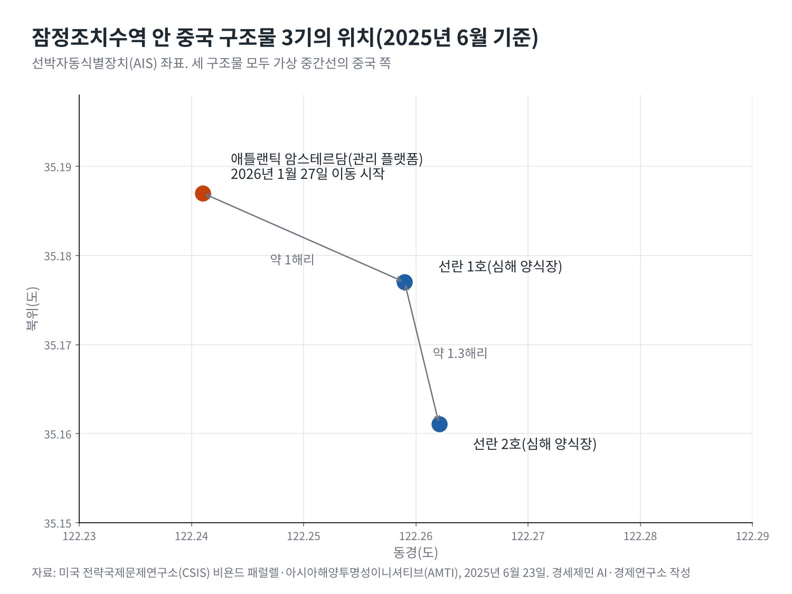
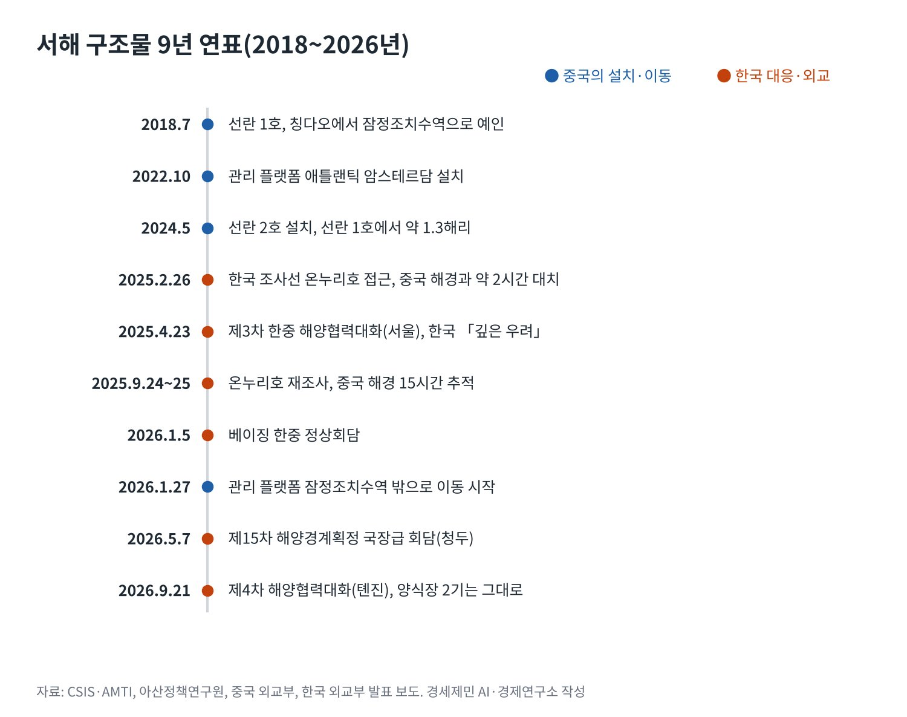

[서해평화 가능한가①] 중국의 서해 구조물이 노리는 서해 지도
관리 플랫폼은 1월 웨이하이로 옮겼지만 양식장 2기는 잠정조치수역에 그대로
유엔해양법협약 제60조 「구조물은 경계획정에 영향 없다」, 제74조는 과도기 자제 의무
9월 톈진 해양협력대화에서도 중국은 「순수 양식시설」 되풀이
중국이 서해 한중 잠정조치수역에 띄운 구조물 3기 가운데 1기가 올해 1월 물러났다. 중국 외교부는 1월 27일 자국 기업이 관리 플랫폼을 옮기고 있다고 밝혔다. 한국 외교부는 이를 「의미 있는 진전」으로 평가했다.
남은 2기는 그대로다. 심해 연어 양식장 선란 1호와 선란 2호다. 두 나라는 9월 21일 톈진에서 제4차 해양협력대화를 열었지만 철거나 추가 설치 제한에 합의하지 못했다. 중국은 「순수 양식시설」이라는 입장을 되풀이했다.
구조물은 선이 없는 바다에 놓였다. 한중은 서해 배타적경제수역(EEZ) 경계를 아직 긋지 못했다. 선을 긋기 전 바다에 무엇을 놓느냐가 협상 지형을 흔들 수 있다는 우려가 한국과 미국의 연구기관에서 함께 나온다.
1. 잠정조치수역의 세 구조물, 8년의 궤적
잠정조치수역은 2001년 6월 30일 발효한 한중어업협정이 만든 공동관리 수역이다. 두 나라의 EEZ 주장이 겹치는 바다를 어업공동위원회가 관리한다. 단속은 각자 자국 어선만 하는 기국주의를 따른다.

미국 전략국제문제연구소(CSIS)와 아시아해양투명성이니셔티브(AMTI)는 위성사진과 선박자동식별장치(AIS) 자료로 연표를 짰다. 선란 1호는 2018년 7월 칭다오에서 이 수역으로 예인됐다. 지름 약 60m의 양식 시설이다.
2022년 10월에는 석유 시추 설비를 고친 관리 플랫폼 애틀랜틱 암스테르담이 들어섰다. 2024년 5월에는 지름 70m, 높이 71.5m의 선란 2호가 선란 1호에서 약 1.3해리 떨어진 곳에 자리 잡았다.
세 구조물은 북위 35도10분, 동경 122도15분 부근에 모여 있다. CSIS는 셋 모두 두 나라 해안의 가상 중간선 중국 쪽에 있다고 분석했다. 중국은 중간선을 넘지 않고 공동관리 수역 안에 시설을 먼저 세웠다.

2. 2025년 대치, 2026년 이동
2025년 2월 26일 한국 해양조사선 온누리호가 구조물 조사에 나섰다가 중국 해경과 민간 고무보트에 막혔다. 한국 해경이 출동해 약 2시간 대치했다. 아산정책연구원 보고서와 코리아중앙데일리가 같은 경위를 전했다.
9월 24~25일 다시 조사에 나선 온누리호를 중국 해경선 2척이 15시간 따라붙었다. 두 나라 배의 거리는 1.7해리까지 좁혀졌다. CSIS 분석을 인용한 뉴시스 보도다. 한국 정부는 조사를 정상적으로 마쳤다고 밝혔다.
변화는 정상회담 뒤에 왔다. 이재명 대통령과 시진핑 국가주석은 1월 5일 베이징에서 만났다. 이 대통령은 7일 상하이에서 중국이 양식장 2기와 관리 시설 가운데 관리 시설을 옮기겠다고 했다고 전했다.
CSIS는 플랫폼이 1월 27일 예인선에 끌려 수역을 벗어났고 31일 웨이하이의 민간 조선소에 닿았다고 분석했다. 중국 외교부는 기업이 자체 관리와 개발 필요에 따라 배치를 조정했다고 설명했다.
중국 외교부는 남중국해와 서해의 양식 시설에 대한 입장은 그대로라고 덧붙였다. 정상 합의의 이행이 아니라 기업의 결정이라는 설명이다. 물러난 것은 관리 시설 1기이고 원칙은 물러서지 않았다.

3. 국제법의 언어, 구조물은 선을 바꾸지 못한다
유엔해양법협약(UNCLOS) 제60조 8항은 인공섬과 시설, 구조물이 섬의 지위를 갖지 않는다고 정한다. 고유한 영해가 없고 영해와 EEZ, 대륙붕의 경계획정에도 영향을 주지 않는다. 구조물로 선을 옮길 수는 없다.
제74조 3항은 경계 합의 전 과도기에 최종 합의를 위태롭게 하거나 방해하지 말라고 요구한다. 같은 조항은 실용적 잠정약정을 맺도록 노력하라고 하고, 그 약정이 최종 경계에 영향을 주지 않는다고 못 박는다.
아산정책연구원 심상민 선임연구위원은 설치만으로 명백한 위반이라 단정하긴 어렵다고 봤다. 다만 구조물을 되풀이해 늘리거나 해역 주장의 근거로 쓰면 제74조 자제 의무 위반이 될 수 있다고 분석했다.
2016년 7월 12일 남중국해 중재판정도 같은 결을 보인다. 중재재판부는 지형의 지위를 매립 전 자연 상태로 판단했다. 중국이 필리핀 EEZ의 미스치프 암초에 인공섬을 만들어 분쟁을 악화했다고 봤다.
중국 외교부는 같은 날 판정이 무효이며 구속력이 없다고 밝혔다. 판정을 따르지 않는 나라와 구조물 문제를 풀어야 하는 것이 한국의 조건이다. 법의 언어와 현장의 힘이 어긋나는 지점이다.
4. 지도의 셈법, 중간선과 형평
서해는 가장 넓은 곳도 400해리가 되지 않는다. 두 나라가 200해리 EEZ를 주장하면 겹칠 수밖에 없다. 한국은 양쪽 해안에서 같은 거리인 중간선을 주장한다. 중국은 해안선 길이와 인구를 고려하는 형평의 원칙을 내세운다.
코리아중앙데일리와 독일 프리드리히 나우만 재단은 중국이 1962년 북한과 맺은 국경조약을 들어 동경 124도선을 해양 경계로 주장한다고 전했다. 이 선은 한국이 자국 EEZ로 보는 수역을 파고든다.
중국은 바다에 출입 금지선도 그었다. 중국 롄윈강 해사국은 2025년 5월 22~27일 서해 3개 구역을 항행금지구역으로 정했다. 미국 뉴스위크 분석을 인용한 YTN 보도를 보면 대부분이 잠정조치수역 안이었고 1곳은 한국 EEZ 안이었다.
CSIS 연표도 같은 달 중국 항공모함 푸젠함 훈련을 위한 항행금지를 기록했다. 양식장, 관리 플랫폼, 해양관측 부이, 항행금지가 한 바다에 겹친다. 하나하나는 작아도 모이면 관할의 그림이 된다.
빅터 차 CSIS 한국석좌는 이를 「서서히 스며드는 주권」이라 불렀다. 그는 한미가 구조물의 좌표를 공개하는 방안을 검토하라고 제안했다. 위치를 드러내는 일이 회색지대 대응의 첫걸음이라는 시각이다.
5. 남은 두 기, 다시 차린 협상 테이블
협상 테이블은 다시 차려졌다. 1월 정상회담에서 두 나라는 2019년 뒤 멈춘 차관급 경계획정 회담을 올해 안에 재개하기로 했다. 5월 7일에는 청두에서 제15차 국장급 회담이 열렸지만 결론은 나오지 않았다.
구조물 문제는 경계획정과 다른 길로 다룬다. 한국 외교부는 1월 두 의제를 별도 경로로 협의한다고 설명했다. 9월 톈진 대화에서 한국은 정당하고 합법적인 해양권익이 침해돼선 안 된다는 입장을 밝혔다.
현장의 협력도 이어진다. 해양수산부는 6월 중국 해경국과 실무회의를 열어 10월 초 잠정조치수역 경계선에서 20해리 안쪽을 열흘간 함께 순찰하기로 했다. 다음 해양협력대화는 한국에서 열린다.
플랫폼 1기가 물러난 일은 대화가 쓸모 있다는 증거다. 그러나 양식장 2기와 중국의 원칙은 남았다. 서해의 지도는 구조물이 아니라 협상으로 그려야 한다. 한국이 기록하고 공개하고 협의하는 일을 멈추지 않아야 하는 이유다.
참고문헌
기관 자료
- United Nations, 「United Nations Convention on the Law of the Sea, Part V Exclusive Economic Zone」(제56·60·74조). https://www.un.org/depts/los/convention_agreements/texts/unclos/part5.htm
- Ministry of Foreign Affairs of the People's Republic of China, "Foreign Ministry Spokesperson Guo Jiakun's Regular Press Conference on April 21, 2025", 2025년 4월 21일. https://www.mfa.gov.cn/mfa_eng/xw/fyrbt/202504/t20250421_11600794.html
- Ministry of Foreign Affairs of the People's Republic of China, "China and the Republic of Korea Hold the Third Meeting of Maritime Affairs Dialogue and Cooperation Mechanism", 2025년 4월 24일. https://www.mfa.gov.cn/mfa_eng/xw/wjbxw/202504/t20250424_11603422.html
- Ministry of Foreign Affairs of the People's Republic of China, 2016년 7월 12일 남중국해 중재판정에 관한 성명, 2016년 7월 12일. https://www.fmprc.gov.cn/nanhai/eng/snhwtlcwj_1/201607/t20160712_8527294.htm
- Permanent Court of Arbitration, "The South China Sea Arbitration(The Republic of the Philippines v. The People's Republic of China)" Press Release, 2016년 7월 12일. https://docs.pca-cpa.org/2016/07/PH-CN-20160712-Press-Release-No-11-English.pdf
- 해양수산부, 「한-중 어업협정 수역 내 불법조업 근절을 위한 양국 협력 강화 합의」, 2026년 7월 1일(KDI 경제정보센터 게재). https://eiec.kdi.re.kr/policy/materialView.do?num=283649
- Korea.net, "China moves structure in Yellow Sea border row with Korea", 2026년 1월 28일. https://www.korea.net/NewsFocus/policies/view?articleId=286552
연구 논문과 보고서
- 심상민, 「중국 서해 구조물 설치의 국제법적 검토」, 아산정책연구원 이슈브리프 2025-13, 2025년 4월 30일. https://www.asaninst.org/wp-content/themes/twentythirteen/action/dl.php?id=99052
- Jennifer Jun·Victor Cha(CSIS·AMTI), "Chinese Platforms in the Yellow Sea's South Korea-China PMZ", Beyond Parallel, 2025년 6월 23일. https://beyondparallel.csis.org/chinese-platforms-in-the-yellow-seas-south-korea-china-pmz/
- Victor Cha, "Creeping Sovereignty? China's Maritime Structures in the Yellow Sea(West Sea)", Beyond Parallel, 2025년 12월 9일. https://beyondparallel.csis.org/creeping-sovereignty-chinas-maritime-structures-in-the-yellow-sea-west-sea/
- Jennifer Jun·Victor Cha(CSIS·AMTI), "China Begins Relocating Structure from PMZ", Beyond Parallel, 2026년 1월 28일. https://beyondparallel.csis.org/china-begins-relocating-structure-from-pmz/
- Jennifer Jun·Victor Cha(CSIS·AMTI), "China Relocates PMZ Structure to Weihai Shipyard", Beyond Parallel, 2026년 2월 2일. https://beyondparallel.csis.org/china-relocates-pmz-structure-to-weihai-shipyard/
- Abhay Kumar Singh, "The Yellow Sea Dispute: Provisional Arrangements and Persistent Deadlock", MP-IDSA Issue Brief, 2026년 1월 22일. https://idsa.in/publisher/issuebrief/the-yellow-sea-dispute-provisional-arrangements-and-persistent-deadlock
언론 보도
- 박준호, "한중 어업협정상 기국주의 적용…타국 국민·어선에 대한 단속 못해", 뉴시스, 2025년 5월 6일. https://mobile.newsis.com/view/NISX20250502_0003162802
- Korea JoongAng Daily, 한중 서해 철골 구조물 분쟁 해설 기사(지면 2025년 4월 30일, 온라인 5월 7일). https://www.koreajoongangdaily.com/korea/10514945
- Frederic Spohr, "China Expands in the Yellow Sea", Friedrich Naumann Foundation for Freedom, 2025년 5월 13일. https://www.freiheit.org/north-and-south-korea/china-expands-yellow-sea
- YTN, 중국 서해 항행금지구역 설정 보도(뉴스위크 분석 인용), 2025년 5월 23일. https://www.ytn.co.kr/_ln/0134_202505231654362807
- 뉴시스, "서해 잠정조치수역서 한중 선박 고위험 대치-비욘드 패럴렐", 2025년 10월 28일. https://www.newsis.com/view/NISX20251028_0003379041
- 연합뉴스, "S. Korea seeks progress in talks with China on maritime demarcation, steel structures", The Korea Herald, 2026년 1월 7일. https://www.koreaherald.com/article/10650354
- "Chinese Yellow Sea structure moved outside PMZ, 20 days after Lee's removal remark", Financial News, 2026년 1월 27일. https://en.fnnews.com/news/202601271700084562
- 다음뉴스, "한·중, 청두서 15차 해양경계획정 국장급 회담 개최…결론 아직", 2026년 5월 7일. https://v.daum.net/v/20260507191252118
- 해사신문, "한중, 서해 구조물 다시 테이블에…中 '순수 양식시설' 되풀이", 2026년 9월 22일. http://www.haesanews.com/news/articleView.html?idxno=151332
- 김혜영, "S. Korea Conveys Concern to China over Yellow Sea Structures; Beijing Claims 'Purely Aquaculture Facilities'", SBS, 2026년 9월 22일. https://news.sbs.co.kr/english/article.do?news_id=N1008766309
[사진 출처]
- [사진1] MODIS Land Rapid Response Team, NASA GSFC, "Sediment in the Bohai Sea, Yellow Sea, and East China Sea (MODIS 2019-03-29).jpg", 위키미디어 공용, 퍼블릭 도메인. https://commons.wikimedia.org/wiki/File:Sediment_in_the_Bohai_Sea,_Yellow_Sea,_and_East_China_Sea_(MODIS_2019-03-29).jpg
※ 이 기사는 AI 프로그램 클로드를 활용해 작성했습니다.
관련기사
- [서해평화 가능한가②] 모순의 바다, 법적 지위가 충돌하는 서해
- [서해평화 가능한가③] 권력 공백기 노린 중국과 북한의 서해 전략
- [서해평화 가능한가④] 중국의 속내, 서해를 내해로
- [서해평화 가능한가⑤] 북한의 계산, 생존에서 협상력까지
저작권자 © AI경세제민 무단전재 및 재배포, AI학습 및 활용 금지